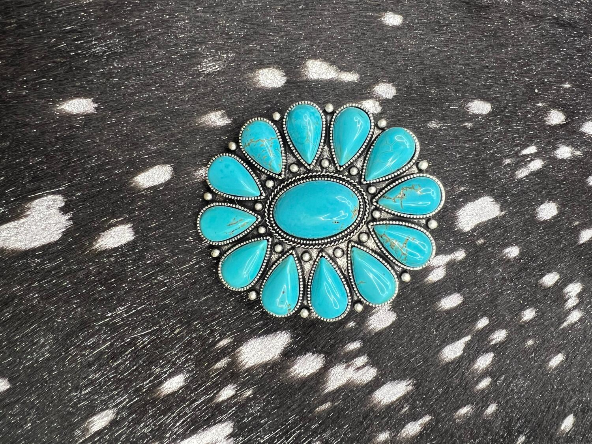

How to buy, clean and care for turquoise jewelry
Everything we tell folks across the jewelry case in Caldwell. What turquoise actually is, how to keep it looking right, how to spot the fakes, and what you are really paying for.

Turquoise is the one stone almost every western outfit ends up wearing, and it is also the one people care for the worst. It is softer and thirstier than most jewelry stones, which means the habits that keep a diamond bright will quietly ruin a turquoise cuff. Here is the whole picture: how to clean it, how to store it, how to tell real stone from dyed rock, what the words natural and stabilized mean on a tag, and why two blue stones the same size can be twenty dollars apart or two thousand.
What turquoise is, and why it needs different care
Turquoise sits at 5 to 6 on the Mohs hardness scale, with toughness that gemologists rate as fair to good. For comparison, quartz is a 7, and quartz is what most household dust is made of. That gap is the whole reason turquoise scuffs in a jewelry box while a harder stone shrugs it off. The other half of the story is that turquoise is porous. It drinks in whatever it touches, and according to the Gemological Institute of America it can be discolored by chemicals, cosmetics, and even skin oils or perspiration. That is not a defect. A lot of old turquoise deepens and greens over decades of wear, and plenty of people prize a piece precisely because it carries the history of being worn. What you want to avoid is the fast kind of damage: hairspray, hand sanitizer, pool chemicals, oven heat.
Two practical rules follow from that. Put your turquoise on last, after lotion, perfume and hairspray have dried. Take it off first, before you wash dishes, swim, or clean the house.
How to clean turquoise jewelry without damaging it
The safe method is boring and short: warm, soapy water, a soft cloth, and dry it right away. That is the method GIA lists as safe for turquoise, and there is no better one hiding behind it. Use as little water as the job needs, work gently around the setting, and do not leave the piece soaking, because water sitting in a porous stone and in the seams of silverwork is how you get trouble.
What matters more is the list of things never to do. Never put turquoise in an ultrasonic cleaner, and never steam clean it. Both are standard tools for harder stones and both are specifically unsafe for turquoise. Skip solvents and harsh chemicals too. Turquoise dissolves slowly in hydrochloric acid, and if a stone has been treated, heat or solvents can damage the treated surface. That includes a lot of the jewelry dips and instant cleaners sold for silver. If your silver has tarnished around the stone, use a dry polishing cloth on the metal and keep it off the turquoise rather than dunking the whole piece.
Honestly, the best cleaning is prevention. A quick wipe with a soft dry cloth every time you take a piece off removes the oils before they soak in, and it does more for a turquoise ring over ten years than any deep clean will.
How to store turquoise jewelry
Store turquoise on its own. A soft pouch, or a lined compartment in a jewelry box, keeps it from rubbing against harder stones and silver edges that will scratch a 5 to 6 hardness stone without much effort. Loose in a dish with everything else is how good pieces get dulled.
Keep it cool. High heat can cause discoloration and surface damage, so the dash of a truck in an Idaho summer, a sunny windowsill and a bathroom counter next to a curling iron are all worse than they look. Light itself is not the problem, since turquoise is generally stable to light, so a drawer or a box is fine. Keep it away from where lotions and cleaning products live, and if you are putting a piece away for a long stretch, a soft pouch in a drawer beats a sealed plastic bag.
How to tell real turquoise from dyed howlite
Most of the fake turquoise in the world is dyed howlite, a white mineral with grey veining that takes blue dye beautifully. It shows up in cheap strands, tourist jewelry and a lot of what sells online. There are a few honest tells.
Hardness is the clearest one. Howlite is about 3.5 on the Mohs scale against turquoise at 5 to 6, so dyed howlite scratches easily where real turquoise resists. Color is the next tell: genuine turquoise is rarely perfectly even, and stones that are very uniform in color are more likely dyed. Texture helps too, because on a natural piece your fingernail tends to catch a little where the matrix meets the stone, while a dyed imitation runs smooth and samey. There is also an acetone test, where nail polish remover on a cotton swab lifts blue dye off an imitation and leaves a lighter patch, but understand that it is destructive and it is not something to try on a piece you like.
The plainest tell is price. High grade natural turquoise is genuinely scarce, so a large, deeply blue, perfectly matched piece at a bargain price is telling you something. Buy from someone who will tell you straight what a stone is and how it was treated. For what it is worth, we carry both. There is real turquoise in our case and there are faux turquoise pieces on the rack, and the faux ones say faux on the tag, because a fifteen dollar pair of earrings that looks great is a perfectly good thing to buy as long as nobody is pretending it is something else.
Natural, stabilized, or faux: what the tag is telling you
Three words cover most of what you will see. Natural turquoise is used the way it came out of the ground, cut and polished with nothing added. It is the rarest and the priciest, and because untreated stone is porous, it is also the one that changes most with wear.
Stabilized turquoise is still real turquoise. Coarse, porous stones are usually treated to make them smoother, shinier and more marketable, and that treatment is what stabilizing means. It hardens the stone so it can be cut and set and worn daily without soaking up everything it touches. Most turquoise jewelry sold today is stabilized, and there is nothing wrong with that. Just remember that heat and solvents can damage treated surfaces, so stabilized stone still gets the soapy water treatment and never the ultrasonic.
Faux turquoise is not turquoise at all. It is dyed howlite, magnesite, resin or ceramic made to look the part. It is fine to own and fine to sell. It is only a problem when it is sold as the real thing at real turquoise prices.
Why turquoise jewelry is so expensive
Color carries most of the value. The most prized turquoise is an even, intense medium blue, the shade the trade calls robin's egg or sky blue, and historically Persian blue after the material from the Nishapur district in Iran. Green and greenish blue stones generally bring lower prices, although plenty of contemporary designers hunt for avocado and lime tones on purpose. Above everything else, GIA is clear that the quality and evenness of the color is the overriding value factor, which is why a small, even, saturated stone can outprice a big blotchy one.
Matrix is the second lever. Matrix is the host rock left in the stone, the dark veining you see running through it. As a rule, matrix lowers value, and the ideal is an even medium blue with none of it. The exception is spiderweb turquoise, where the matrix forms a fine even web, and collectors will pay up for that specifically. So the veining in a stone is not automatically good or bad. It depends on whether it looks like a pattern or looks like a flaw.
Then add the silver. A hand built cuff or a cluster ring is a lot of hours of silverwork, and that labor is often a bigger share of the price than the stone. Between scarce high grade material, the color lottery, and the handwork, the spread between a costume piece and a serious one is enormous, and both are sitting in the same case looking blue.
Why turquoise reads as western
Turquoise has been mined and worn across the American Southwest for centuries, long before it was a fashion. The silver and turquoise tradition built by Southwestern silversmiths, the cuffs, the squash blossoms, the concho work, is what fixed it as the stone of western dress. That style traveled out of the Southwest and into ranch country everywhere, which is why a turquoise cuff still looks right in Idaho with a snap shirt and a pair of boots. It is not a costume. It is one of the oldest continuously worn looks on the continent.
How to wear it without overthinking it
Turquoise is a loud stone in the best way, so it does the most work when it is the one thing shouting. A single statement cuff or a good cluster ring against a plain shirt beats a full set worn all at once. It sits naturally with silver rather than gold, though mixed metal has been western for a long time and there is no rule you have to follow. It reads well against browns, denim, cream and black, which is most of a western wardrobe already.
If you are buying your first real piece, buy the one you will actually wear. A ring or a pair of earrings gets worn a hundred times more often than a squash blossom that lives in a drawer waiting for an occasion.
Come look at it in person
Photographs are the worst way to buy turquoise. Screens push blue, and the thing you are actually judging, the evenness of the color and the way the matrix runs, is exactly what a photo flattens. In the case in Caldwell you can put two stones side by side under the same light, which takes about four seconds to tell you what an hour of scrolling will not. Jewelry is the biggest corner of our shop, so there is plenty to compare, and we will tell you what a stone is before you ask.
Quick answers
Put it on after your lotion and perfume, take it off before the water and the chemicals, wipe it down when you set it aside, and a good turquoise piece will outlive you. If you are anywhere in the Treasure Valley, come see the case on Cleveland Boulevard in Caldwell.